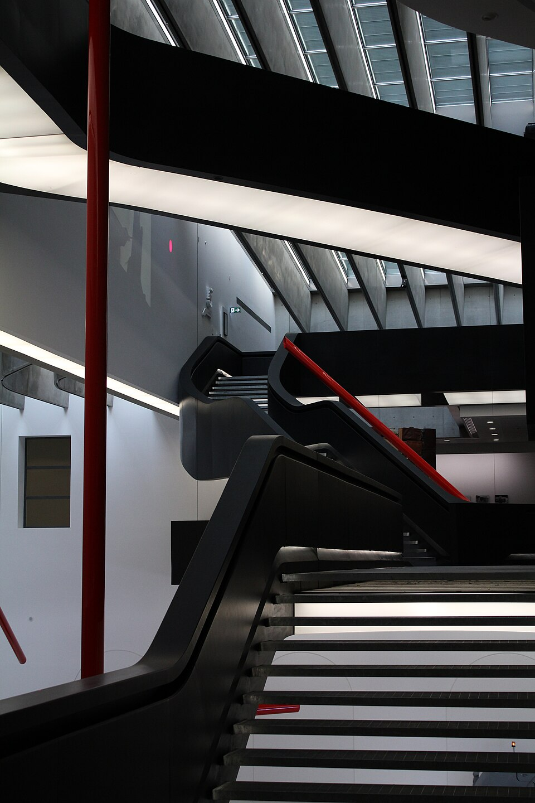

MAXXI e Roma contemporanea
L'avvolgente architettura di Zaha Hadid ospita il meglio dell'arte del presente.
Controlla costo, prenotazione, apertura e accessibilità con il gestore. / Check price, booking, opening and accessibility with the operator.

L'avvolgente architettura di Zaha Hadid ospita il meglio dell'arte del presente.
Controlla costo, prenotazione, apertura e accessibilità con il gestore. / Check price, booking, opening and accessibility with the operator.